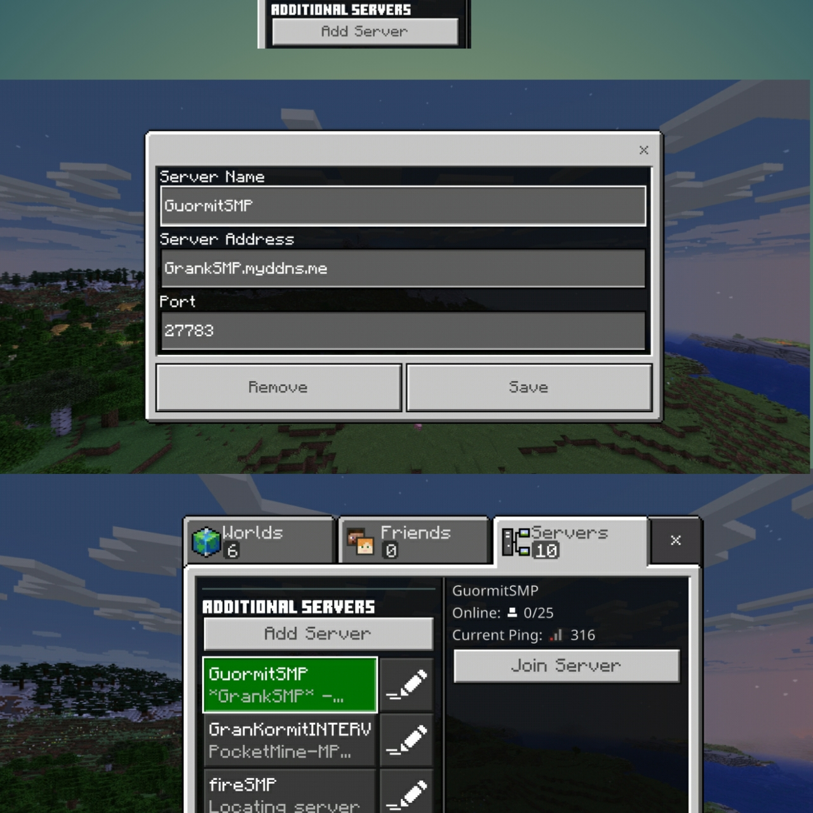

PORT AND IP
port: 19132
ip:play.guormit.cf
or tap =>here
YOU NEED TO SIGN UP HERE FOR WHITELIST
the guormit minecraft server as we like to call it is a multiplayer survival minecraft server
we of course have rules that WILL be followed, the rules are placed in sighs within the server world. there are plenty of cool things which you can find within
the server like the green team castle or the blue team bastion (we have teams, all new members from now on go to blue team) and a bunch of other cool creations
if you wuold like to join than read the steps below, {minecraft v1.18 required, if you dont have it than you can download from our website link here
the nessesary steps.
step 1: open minecraft [note minecraft bedrock required]. on your mobile device
search for minecraft among your apps, if you dont have minecraft you can download it here on windows you can search for it on the toolbar

on moibile here

once you have opened minecraft you can proceed to the next step
step 2: play and go to the servers tab over here

go to the add server button and input the port and ip of our server.or tapHERE
definition of a minecraft server: A Minecraft server is a player-owned or business-owned multiplayer game server for the 2009 Mojang video game Minecraft. In this context, the term "server"
often colloquially refers to a network of connected servers, rather than a single machine.[1] Players can start their own server either by setting one up on a computer using software provided by Mojang, or by using a hosting provider so they can have
their server run on dedicated machines with guaranteed uptime.[2] The largest and most popular server is Hypixel.[3][4]
Minecraft multiplayer servers are controlled by server operators, who have access to server commands such as setting the time of day, teleporting players
and setting the world spawn. The server owner (or users that have access to the live server files) can also set up and install plugins to change the mechanics of the server, add commands among other features, and can also set up
restrictions concerning which usernames or IP addresses are allowed or disallowed to enter the server.[2]